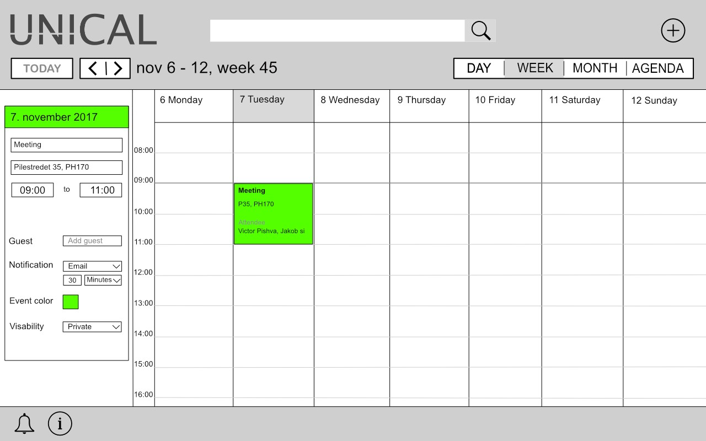
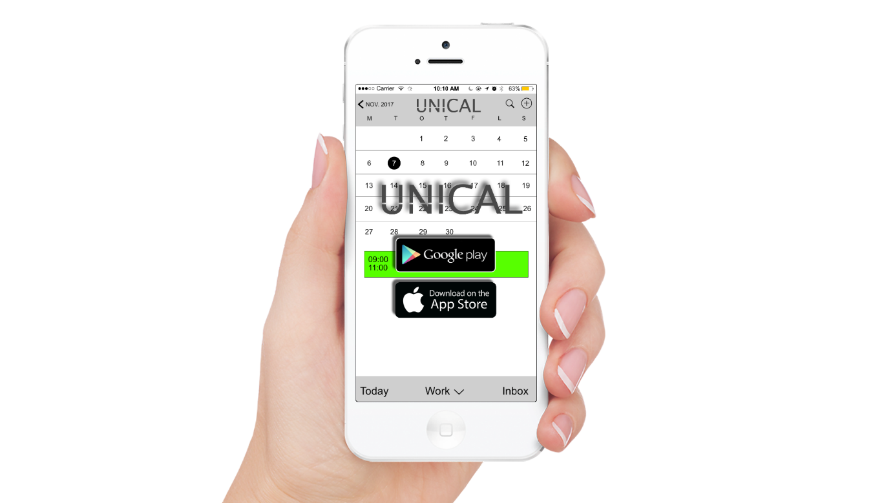

Vi introduserer UNICAL. Den vil være den eneste kalendertjenesten som tar all informasjon fra dine digitale kalendere og vil samle dem inn i et sted. UNICAL gjør det mulig å kunne velge ulike hendelser, med mulighet for å velge om det er offentlig, privat, jobb, eller andre fritidsaktiviteter. Det er mulig å endre/oppdatere hendelser med tid og dato slik at folk vil få et bedre brukergrensesnitt.
Som mange andre kalendertjenester har vi også et varslingssystem, med UNICAL´s varslingssystem vil flere personer få en bedre brukeropplevelse. Det skal også være mulig å få opp varslinger/hendelser i moderne digitale smart klokker og briller. Her vil dere se i bilder hvordan UNICAL vil se ut og fungere i praksis. UNICAL's app bruker funksjonene fra fullversjonen og optimaliserer de for mobilt bruk.
EasyShare er løsningen vår for å gjøre det enklere for lærere og studenter å organisere og opprette grupper. Det er enkelt å invitere, påminne og gjøre endringer for store og små grupper. Når en lærer endrer tidspunktet på en forelesning vil EasyShare automatisk oppdatere og sende ut påminnelse til alle som er med i den faggruppen. Du kan også velge at varslene vil komme i form av e-post og pushvarsel. Brukeren har selvfølgelig mulighet til å endre oppdateringsfrekvens for sjekk av endringer i kalenderen (med tanke på databruk).
Blinde:
Svakere syn:
Døve og blinde:
Redusert motorisk evne:
UNICAL Forumet er utviklet for å få tilbakemelding fra brukere og for eventuelle spørsmål. Dette vil bidra til å gjøre forbedringer for funksjonalitet, brukeropplevelse og feilrettinger.